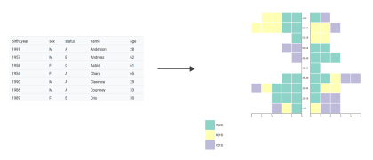

Pyramidage
Pyramidage est un outil en ligne pour créer des pyramides des âges automatiquement à partir d'un fichier CSV.
Données en entrée
Paramètres
Catégories
| Catégorie | Couleur | Effectif |
|---|
A quoi ça sert ?
Pyramidage est un outil en ligne pour créer des pyramides des âges automatiquement à partir d'un fichier CSV.
{kind=link}
Cet outil présente 3 intérêts :
- Faire varier facilement la taille des classes d'âge et les âges minimum et maximum
- Visualiser 2 variables en plus de l'âge et du sexe, une avec la couleur et l'autre avec une infobulle (en passant la souris sur la pyramide)
- Exporter le résultat en SVG pour pouvoir le modifier dans un logiciel de dessin vectoriel, en gardant comme identifiant l'information affichée dans l'infobulle.
Cet outil n'est pas pour l'instant adapté à de gros jeux de données.
Une pyramide des âges permet de visualiser la répartition de la population en fonction du sexe et de l'âge. Elle est consituée de deux histogrammes juxtaposées, traditionnellement les hommes à gauche et les femmes à droite. L'axe horizontal représente le nombre d'individus, et l'axe vertical l'âge des individus.
Comment ça marche ?
Le fichier CSV doit contenir :
- une ligne d'en-tête
- une ligne par individu
- une colonne pour l'année de naissance
- une colonne pour le sexe (facultative si le mode non genré est choisi pour la répartition des sexes)
Les colonnes Catégorie et Infobulle sont facultatives.
Le caractère délimiteur (virgule, point-virgule...) est normalement automatiquement détecté.
Une fois le fichier sélectionné, un aperçu de son contenu s'affiche.
Un fichier exemple avec des données aléatoires est disponible ici.
Choisissez l'année pour laquelle la pyramide sera valable. Il s'agit généralement de l'année en cours.
Sélectionnez la colonne du fichier CSV correspondant à l'année de naissance.
Sélectionnez la colonne du fichier CSV correspondant au sexe.
Le sexe féminin peut être codé par, au choix, F, FEMME, FEMALE, XX.
Le sexe masculin peut être codé par, au choix, M, H, HOMME, MALE, XY.
Cette option est facultative.
Vous pouvez choisir une colonne avec des catégories ; chaque individu sera représenté d'une couleur correspondant à sa catégorie.
Les couleurs sont personnalisable, ainsi que l'ordre dans lequel les catégories sont dessinées en partant de l'axe vertical de la pyramide.
Si vous ne choisissez aucune colonne, tous les individus seront représentés de la même couleur.
Cette option est facultative.
Vous pouvez choisir une colonne correspondant à l'information de votre choix. Cette information sera disponible pour chaque individu dans une infobulle en le survolant avec la souris.
Cette information sera également récupérée dans l'export SVG via l'identifiant de chaque carré correspondant à un individu.
Choisissez ici la taille de chaque classe d'âge.
Choisissez ici l'âge de début de la première classe d'âge. Une classe inférieure sera créée.
Par exemple, si vous choisissez 25, une classe sera créée pour les moins de 25 ans.
Choisissez ici l'âge de fin de la dernière classe d'âge. Une classe supérieure sera créée.
Par exemple, si vous choisissez 65, une classe sera créée pour les plus de 65 ans.
Les gammes de couleur utilisées pour représenter les catégories peuvent être qualitatives, pour représenter des valeurs non ordonnées, ou bien séquentielles, pour représenter des valeurs ordonnées.
Si vos catégories sont des nombres et votre gamme de couleur de type séquentiel, les couleurs extrêmes de la gamme correspondront aux valeurs minimum et maximum de vos catégories, et les couleurs intermédiaires seront interpolées en fonction des valeurs.
Si vos catégories sont des textes et votre gamme de couleur de type séquentiel, les couleurs extrêmes de la gamme correspondront à la première et la dernière catégorie rencontrée dans votre fichier CSV.
Différentes gammes de couleurs sont disponibles en fonction du type de gamme. Toutes ces gammes sont issues de ColorBrewer via le plugin D3.js d3-scale-chromatic.

Vous avez le choix entre 3 modes :
- "traditionnel", les hommes à gauche et les femmes à droite
- les femmes à gauche et les hommes à droite
- pas de distinction de sexe. La colonne sexe du CSV est alors facultative.
Ce tableau contient 3 colonnes, pour le nom, la couleur et les effectifs de chaque catégorie.
Une fois le fichier CSV choisi, il contient par défaut une seule ligne avec une catégorie unique, et peut contenir plusieurs lignes si vous sélectionnez une colonne catégorie.
Il est possible de changer l'ordre des lignes du tableau par un glisser-déposer, ou bien en cliquant sur le nom des colonnes. L'ordre dans lequel les individus sont dessinés sur la pyramide des âges est alors modifié.
Jusqu'à 12 couleurs, les couleurs sont issues d'une gamme qualitative proposée par ColorBrewer. Au-delà, il s'agit de couleurs aléatoires.
Après avoir choisi vos paramètres, cliquez sur ce bouton pour afficher la pyramide des âges.
Le graphique ne se met pas à jour automatiquement, il faut donc reconstruire la pyramide après avoir modifié un paramètre.
Cliquez sur ce bouton pour obtenir un export SVG de la pyramide.
Chaque carré correspondant à un individu aura un identifiant reprenant l'information de la colonne infobulle si cette colonne a été sélectionnée.
Le SVG est un format vectoriel modifiable dans un logiciel de dessin tel qu'Inkscape ou Adobe Illustrator. Vous pourrez également le convertir dans un format image comme le JPG ou le PNG.
Si vous n'arrivez pas à ouvrir le fichier SVG avec Adobe Illustrator, ouvrez-le avec Inkscape et enregistrez-le à nouveau au format SVG puis réessayez avec Illustrator.
Mais encore ?
Pyramidage utilise la bibliothèque javascript D3.js. Les gammes de couleurs sont celles de ColorBrewer. Le code complet est disponible ici et est sous licence GPLv3.
Pour faire une remarque, une suggestion : julie.pierson [@] cnrs.fr (ou @sigomatique sur Twitter).
Si vous avez besoin de citer Pyramidage : Julie Pierson, Pyramidage, Pôle ARD UMR 5319 Passages, 2019.